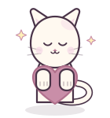
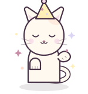
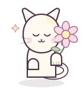

Peek
Hero edge · hello
DivLand · visual direction
Original hand-drawn cat stickers for Divya's birthday site. Pastel fills, thin plum linework, cream sticker edges, and gentle motion. They should feel like tiny companions tucked into the existing storybook pages, never like a second layer of decoration fighting the layout.
Peek
Hero edge · hello
Sleepy
Letter · read slowly

Heart
Thoughts · pride

Party
Finale · make a wish

Flower
Memories · keepsakes
Loaf
Personality · off duty
Cup
Cafe · catpuccino
Peek from the lower-left edge, just above the scallop divider.
peekLoaf beside the slider card, slightly overlapping the bottom edge.
loafHeart cat at the lower-right, clear of the machine and warning note.
heartCup cat on the counter, left of the machine, desktop only.
cupFlower cat tucked over the scrapbook's lower-right edge.
flowerHeart cat beside the final message card, after completion.
heartSleepy cat in the lower-left of the dark letter card, bubble opens inward.
sleepyParty cat beside the cake, peeking past the bottom tier.
party